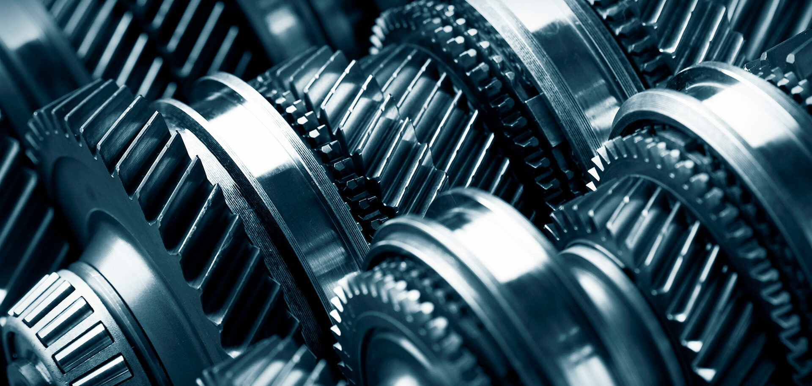
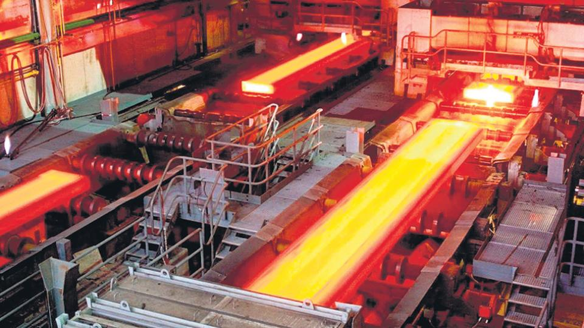
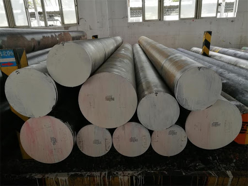

Experiencia
Nuestra amplia experiencia en el sector industrial permite prestar una óptima asesoría técnica y comercial. Los procesos de calidad y ventas están compuestos por Ingenieros Mecánicos, Metalúrgicos y de Materiales, que tienen presencia permanente con los clientes y disponibilidad para prestar asesoría en todo momento.
Sectores de la producción
Atendemos los sectores de: automotriz, eléctrico, industria del gas, industria metalmecánica entre ellos (elementos de fijación forjados y estampados, procesos de deformación en frio y caliente, procesos de electrodeposición, resortes y siderurgia), sector minería y colchonero.
Sede Bogotá
Buscando estar más cerca de nuestros clientes de Bogotá, contamos con una sede ubicada en Paloquemao, cuenta con sala de ventas y centro de servicios de corte. Nuestro horario de atención en esta sede es de Lunes a Viernes 7:30 a.m a 5:30 p.m y Sábados de 8:00 a.m a 12:00 m.
Centro de servicios
Nuestro centro de servicios, nos permite suministrar materiales cortados en diámetros hasta 24 pulgadas y tramos en las longitudes y cantidades requeridas por nuestros clientes
Linea de transformación
Los procesos de transformación calibración y trefilación pretenden reducir de sección, los materiales ferrosos aceros y no ferrosos cobres y latones, por estiramiento en frío a través de una hilera ó matriz con geometría definida con el fin de conseguir en el material unas ventajas claramente definidas como, un Incremento en su resistencia mecánica, un acabado superficial excelente con una baja rugosidad y unas dimensiones finales alcanzadas bajo las normas DIN bajo el campo de tolerancias ISO h9 y h11 lo que le permiten a su compañía obtener grandes economías en sus costos productivos. Nuestra planta de producción cuenta con estos procesos en la que obtenemos productos terminados en formas de rollos y barras en aceros de bajo, medio y alto carbono, aceros de alta maquinabilidad, cobres, latones de alta maquinabilidad, estampación y conformación en frio, además, en diferentes perfiles como redondos, cuadrados, platinas, hexagonales y figuras especiales. Los productos terminados los clasificamos de acuerdo a su aplicación, para los aceros, en la fabricación de piezas de baja y media resistencia mecánica; los de fabricación de piezas en serie en tornos automáticos; los utilizados como elementos de fijación para la fabricación de pernos, espárragos, tornillos, entre otros. que involucren mecanizado, roscado por laminación ó estampación en frio que en este caso se suministrarían con tratamiento térmico de recocido; los que requieren un proceso de estampación en frío -Cold Heading-; para la fabricación de mallas, resortes colchoneros o industriales que requieren un medio o alto limite elástico; para la fabricación de productos que llevan un posterior proceso de recubrimiento electrolítico como cromado, latonado, niquelado, entre otros.; como alambres brillantes para la elaboración de estanterías, canastillas, o en general piezas que no demanden una exigencia mecánica del material. Para con los cobres y latones, los productos terminados los clasificamos igualmente en aplicaciones que van desde las utilizadas para máquinas en serie, hasta las que permiten conformarse en frío o en caliente.



